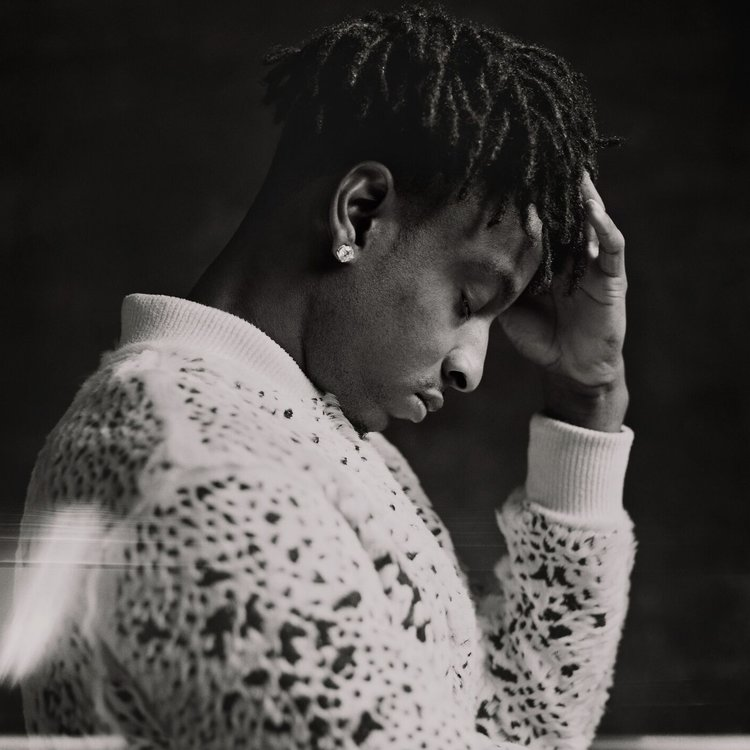
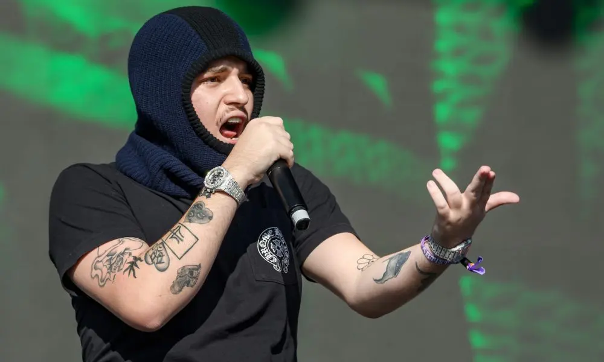

The Slaughter Tape (2016)
Slaughter King (2016)
Savage Mode (2016 Spolupráce s Producerem Metro Boomin)
21 gang (2016)
Issa Album (2017)
Without Warning (2017 spolupráce s rapperem Offset a Metro Boomin)
NOT ALL HEROES WEAR CAPES (2018 Spolupráce s Metro Boomin)
I am > I was (2018)
Savage Mode II (2020 Spolupráce s Producerem Metro Boomin)
Her Loss(2022 spolupráce s rapperem Drake)
Informace které jsem čerpal a více Informací
Rapper z Atlanty, který odstartoval svou kariéru se skupinou Slaughtergang, MC 21 Savage zaútočil jako sólový umělec se singlem „Picky“ z roku 2014. První singl „Picky“ zahájil svou sólovou kariéru v roce 2014 a jeho debutový mixtape, The Slaughter Tape, vyšel v roce 2015. Free Guwop EP s Sonny Digital , vyšlo ve stejném roce, stejně jako druhý sólový mixtape, Slaughter King. V roce 2016 se připojil ke Metro Boomin k společnému EP Savage Mode, které se vyšplhalo do Top 25 žebříčku Billboard 200 a vyvrcholilo na sedmém místě žebříčku Rap Albums. Plnohraný debut Savage dorazil v létě 2017. Album Issa (/) představovalo produkci Metro Boomin,Southside,Zaytoven a ,DJ Mustard stejně jako vystoupení Young Thug v "Whole Lot". ~ David Jeffries
A lot
Ball w/o you
Runnin
Glock in my lap
Rich Flex
Jimmy Cooks (feat.21 Savage)
Creepin (with The Weeknd,21 Savage)
Spin Bout
Knife Talk (with 21 Savage ft.Project Pat)
Niagara Falls (Foot or 2) (with Travis Scott, 21 Savage)
Narco Choppa (2019 spolupráce s rapperen Icy Narco)
Holly Trap (2019)
Cottonwood (2019)
Top Shotta (2020)
From Dark to Light (2020)
Me vs Me (2022)
Cottonwood 2 (2023)
Informace které jsem čerpal a více Informací
NLE Choppa je neúprosný. S více než 5,5 miliardami celkových streamů, 14 plaketami s certifikací RIAA, 18 miliony kombinovaných sledujících a dvěma singly z roku 2023, které našly pohodlný domov v žebříčku Billboard’s Hot 100, už 20letý MC z Memphisu superstar dokázal hodně. A přesto neustále pracuje na tom, aby uspokojil potřeby svých fanoušků a dokázal, že se mýlili zbývající pochybovači. Choppova nedávná práce, která vyvrcholila jeho novým albem, Cottonwood 2 je stále předzvěstí na všech myslitelných úrovních. Choppův nástup v rapové hře je legendou, ale pro nezasvěcené: Jeho singl „Shotta Flow“ s platinovou certifikací se stal jednou z největších rapových písní roku 2019 bez premiéry, spolupodepsaného nebo velkého vydavatelství. S přáním kreativní kontroly a vlastnictví se spojil s Warner Records na distribuci své hudby a budoucích nahrávek na svém labelu No Love Entertainment. Rychle vpřed do roku 2023 a technická pyrotechnika zůstává, ale Choppa strávil více času obrácením se dovnitř, přemítáním o své oddanosti rodině a spiritualitě a sdílením sebe sama, než kdy předtím. Jeho písně o překonávání bojů a oslavách vítězství získaly podporu od Billboard, The New York Times, Forbes, GQ a Complex. Nyní chce, aby rapová konverzace odrážela jeho obrovský talent. "Když zmiňujete největší umělce, nebo když zmiňujete ty nejžhavější umělce právě teď, musím být v tom rozhovoru," prohlašuje.
SLUT ME OUT
DO IT AGAIN (feat. 2Rare)
Walk Em Down (feat. Roddy Ricch)
Shotta Flow (feat. Blueface)
Capo
Camelot
AIN'T GONNA ANSWER
SHAKE IT
Final Warning
TALK DIFFERENT
Wake up Call(2019)
Alive (2021)
4L (2021)
Up 2 Me (2021)
2 Alive (2022)
Lyfe (2022)
AfterLyfe (2023)
Informace které jsem čerpal a více Informací
Automaticky laděné melodie, výrazné vokály, divoké produkční možnosti a chytré bary, které kradou scény, to vše jsou vrcholy podmanivého stylu Portlandu, rappera Yeata z Oregonu. K Yeatovu rostoucímu profilu se přidala virální online pozornost a uznání od Drakea a on se přihlásil k Interscope Record a k vydání svého studiového debutu v roce 2021, Up 2 Më. 2 Alivë a Lyfë z roku 2022 se dostaly do první desítky žebříčku Billboard 200 a AftërLyfe z roku 2023 se stal jeho první pěticí. Yeat se narodil jako Noah Smith v roce 2000. Hudbu začal vydávat kolem roku 2015, přičemž si dělal poznámky od Young Thuga z melodické podivnosti a vynalézavých produkčních stylů rapperů, kteří stoupali na výsluní, jak vyrůstal. Začal používat přezdívku Lil Yeat, ale v roce 2018 ji zkrátil na Yeat. Ten rok vydal svůj první mixtape, Deep Blue Strips. Od té chvíle byl v hyperdrive, v roce 2019 vydal tři mixtapy, v roce 2020 dvě EP a sporadické singly, které se objevily mezi jeho dalšími projekty. Rapper prorazil v roce 2021, kdy se jeho píseň „Gët Busy“ začala objevovat ve videích TikTok. Skladba se stala tak všudypřítomnou, že její texty byly dokonce odkazovány Drakem . Jak jeho sláva raketově stoupala, Yeat vydal mixtapes Alivë a 4L a Trëndi EP, než podepsal smlouvu s Interscope na vydání svého prvního pořádného studiového alba. Up 2 Më byl vydán v září 2021 a dostal se na nižší úroveň žebříčku Billboard Top 200. Druhé studiové LP, 2 Alivë, rychle následovalo na začátku roku 2022 a vyskočilo v žebříčku Billboard na šesté debutové místo. Následující EP Lyfë vyšlo v září a dosáhlo čísla deset. Plnohraná verze AftërLyfe dorazila v roce 2023 a byla dalším úspěchem,
Out the way
Talk
Money so big
Flawless (feat. Lil Uzi Vert)
Already Rich
On tha line
Sorry Bout That
Get Busy
Poppin
Split